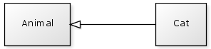

Within CFML the object oriented terminology used is slightly different from that used in other object oriented languages. When learning object oriented concepts it is very useful to keep these terms in mind as they will be used in most texts outside of CFML.
Let's summarise some common OO terms and relate them to CFML.
A class in common OO is equivalent to a component in CFML.
If you were asked to write a class that represents a Cat then you would create a Cat.cfc file to represent that class.
Class Cat:
{% highlight cfm %}A method in common OO is equivalent to a function in CFML. More specifically it is equivalent to a function within a component.
If you were to write a class called Cat with a method feed(food) then you would create a Cat.cfc component and write a function named feed with one argument named food.
Class Cat with method feed():
{% highlight cfm %}Sometimes in common OO, methods (i.e. CFML functions) are referred to as a messages and calling methods is referred to as passing messages
The following phrases are essentially equivalent:
For example, if you have an object based on the Cat component above then you could say "pass the feed message to your cat object".
A parameter in common OO is equivalent to an argument for a CFML function.
Our cat component above has a function called feed with a single argument named food.
In common OO we would say that our Cat class has a method feed with one parameter named food.
The constructor is a method that runs when an object is first created. It's purpose is to set an object into it's initial state.
In CFML the conventional equivalent is though using an init() function. By convention we must call this function explicitly after our objects have been created.
{% highlight cfm %}However, in common OO constructors are not explicitly called, they are automatically called when the object is created. In CFML this is achieved though a component's pseudo constructor. The pseudo constructor is simply code that is within a component, typically at the top, and is not inside any function.
{% highlight cfm %}The pseudo constructor is conventionally used to declare variables required for the component (and hence documenting the class variables). The init() method is conventionally used to initialise those variables when the object is created.
There are various terms related to inheritance in common OO. For this section lets assume we have two components, Animal.cfc and Cat.cfc where the Cat component extends the Animal component.

When our component "Cat.cfc" extends another component "Animal.cfc", this is equivalent to saying that Cat inherits from Animal.
The superclass or parent class in this relationship is the Animal class. It represents the class that is further up the class hierarchy.
In CFML it would be reasonable to substitute the word class with the word component, which would give us super-component or parent-component.
Sometimes a superclass is also known as a "Generalisation" or a "Base class".
It is worth noting that in some texts a Base class refers to the "top most" object in an inheritance hierarchy, while in others it just refers to a superclass.
The subclass or child class in this relationship is the Cat class. It represents the class that is further down the class hierarchy.
Again, in CFML it would be reasonable to substitute the word class with the word component, which would give us sub-component or child-component.
Sometimes a subclass is also known as a "Specialisation" or a "Derived class".
With some terminology up our sleeve, let's take a look at Inheritance